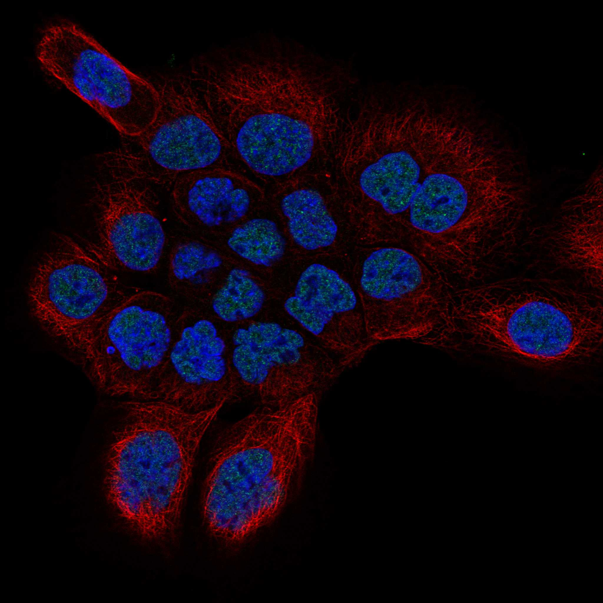
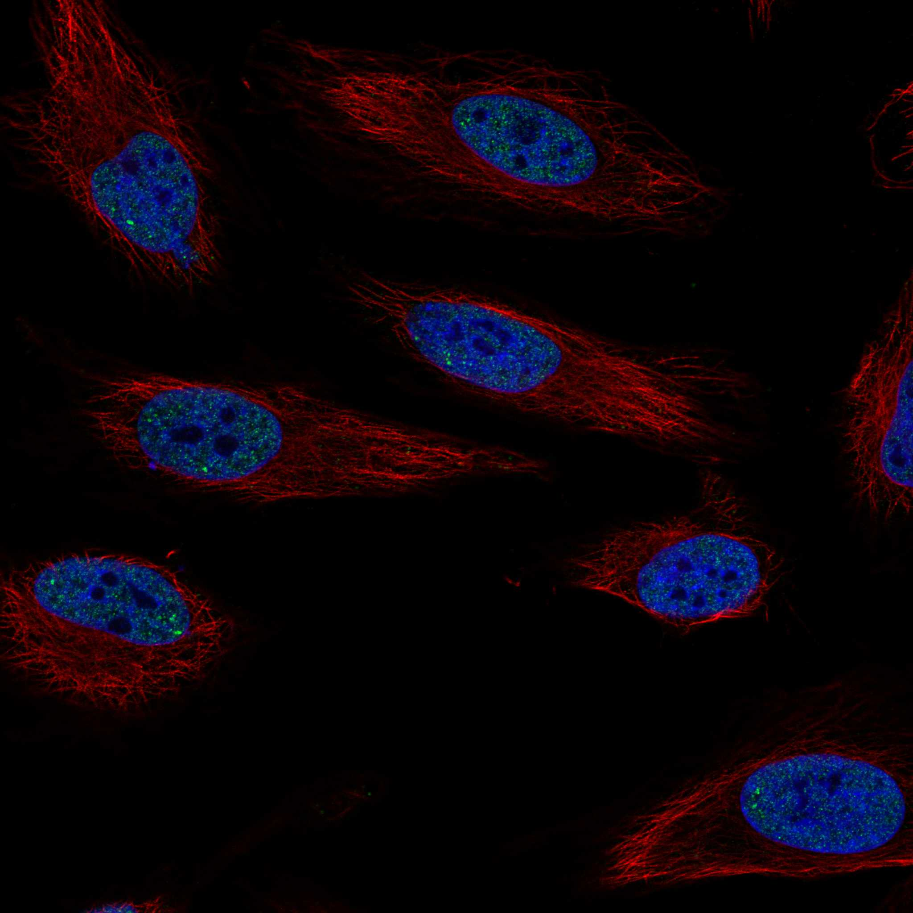
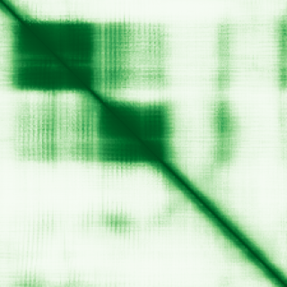

type: protein-evaluation gene: "HES7" date: 2026-06-01 tags: [protein-scout, nucleoplasm, evaluation] status: scored ---
HES7 核蛋白评估报告
1. 基本信息
| 项目 | 内容 |
|---|---|
| 基因名 / 别名 | HES7 / BHLHB37 |
| 蛋白全名 | Transcription factor HES-7 |
| 蛋白大小 | 225 aa / 24.9 kDa |
| UniProt ID | Q9BYE0 |
HPA IF 图像:  
2. 评分总览
| 维度 | 得分 | 新权重 | 加权后 | 关键证据摘要 |
|---|---|---|---|---|
| 核定位特异性 | 6/10 | x4 | 24.0 | HPA Approved: Nucleoplasm+Nucleoli; UniProt: Nucleus; GO: chromatin+nucleus |
| 蛋白大小 | 9/10 | x1 | 9.0 | 225 aa, 24.9 kDa, 小型 bHLH 转录因子 |
| 研究新颖性 | 2/10 | x5 | 10.0 | PubMed strict=100, 已达新颖性阈值上限 |
| 三维结构 | 7/10 | x3 | 21.0 | AlphaFold pLDDT=73.3, pct>90=37.3%; 无 PDB |
| 调控结构域 | 7/10 | x2 | 14.0 | bHLH + Orange domain; HES family 转录抑制因子; Notch 信号下游 |
| PPI 网络 | 4/10 | x3 | 12.0 | IntAct: QARS1/PRPF31/PIH1D2/TCEANC/TCEA2 (Y2H); STRING: MESP2/LFNG (textmining) |
| 加权总分 | 90/180** | |||
| 互证加分 | +1.0 | HPA+UniProt+GO 三源定位一致; IntAct+UniProt PPI 重叠 | ||
| 归一化总分 (÷1.83) | 49.2/100** |
3. 详细分析
3.1 核定位证据
| 来源 | 定位 | 可信度 |
|---|---|---|
| HPA | Nucleoplasm (main), Nucleoli (additional) | Approved |
| UniProt | Nucleus (ECO:0000305) | — |
| GO-CC | chromatin (ISA), nucleus (IBA) | — |
结论: HPA Approved 级别 Nucleoplasm + Nucleoli 定位，UniProt/GO 一致支持核定位。可信度较高。
3.2 蛋白大小评估
225 aa, 24.9 kDa。小型 bHLH 转录因子，适合重组表达与生化实验。
3.3 研究现状
| 指标 | 数值 |
|---|---|
| PubMed strict (Title/Abstract) | 100 |
| PubMed broad | 151 |
| 新颖性级别 | 处于阈值边缘 |
PubMed 共 100 篇文献（严格查询），处于新颖性阈值上限。HES7 主要在 somitogenesis/segmentation clock 方向研究，Notch 信号下游 oscillatory 表达机制已较清楚。其他方向研究空间有限但仍可能存在 niche。
关键文献: 1. Lázaro J et al. (2023). "A stem cell zoo uncovers intracellular scaling of developmental tempo across mammals." *Cell Stem Cell*. PMID: 37343565 2. Harima Y & Kageyama R (2013). "Oscillatory links of Fgf signaling and Hes7 in the segmentation clock." *Curr Opin Genet Dev*. PMID: 23465881 3. Bessho Y et al. (2001). "Hes7: a bHLH-type repressor gene regulated by Notch and expressed in the presomitic mesoderm." *Genes Cells*. PMID: 11260262 4. Matsuda M et al. (2025). "Metabolic activities are selective modulators for individual segmentation clock processes." *Nat Commun*. PMID: 39833174 5. Adam MP et al. (1993). "Spondylocostal Dysostosis, Autosomal Recessive." PMID: 20301771
3.4 三维结构分析
| 指标 | 数值 |
|---|---|
| AlphaFold | AF-Q9BYE0-F1 v6 |
| 平均 pLDDT | 73.3 |
| pLDDT >90 | 37.3% |
| pLDDT 70-90 | 16.4% |
| pLDDT 50-70 | 27.6% |
| pLDDT <50 | 18.7% |
| PDB | 无 |
AlphaFold PAE: 
中等置信度，37.3% 高置信区域集中在 bHLH DNA-binding domain，N/C 端存在无序区域。
3.5 结构域分析
| 来源 | 结构域 | 备注 |
|---|---|---|
| InterPro | IPR011598 (bHLH), IPR032644 (HES7-specific), IPR050370, IPR036638 (HLH superfamily), IPR003650 (Orange) | bHLH DNA-binding + Orange domain for protein interaction |
| Pfam | PF00010 (HLH) | Helix-loop-helix DNA-binding domain |
bHLH 转录因子，Orange domain 介导同源/异源二聚化。作为 Notch 下游转录抑制因子具有明确调控功能。
3.6 PPI 网络（三源综合）
实验验证互作 (IntAct):
| Partner | 方法 | PMID | 功能类别 |
|---|---|---|---|
| PIH1D2 | validated two hybrid | 32296183 | PIH1 domain |
| TCEANC | validated two hybrid | 32296183 | Transcription elongation |
| TCEA2 | validated two hybrid | 32296183 | Transcription elongation |
| QARS1 | two hybrid array | 32296183 | tRNA synthetase |
| PRPF31 | two hybrid array | 32296183 | Pre-mRNA splicing |
STRING 预测互作 (combined score >0.4):
| Partner | Score | 证据类型 |
|---|---|---|
| MESP2 | 0.589 | experimental=0.094, textmining=0.564 |
| LFNG | 0.511 | textmining=0.508 |
UniProt 记录互作: PIH1D2, PRPF31, QARS1, TCEA2, TCEANC (各 3 experiments)
PPI 以高通量 Y2H 为主，缺少 coIP 等验证。与 TCEA2/TCEANC 的转录延伸相关互作有一定机制意义。
3.7 多库互证
| 维度 | 来源 | 结果 | 是否一致 |
|---|---|---|---|
| 定位 | HPA / UniProt / GO | Nucleoplasm / Nucleus / chromatin+nucleus | 三源一致 |
| PPI | IntAct / UniProt | PIH1D2, PRPF31, QARS1, TCEA2, TCEANC 共同出现 | IntAct+UniProt 一致 |
| 结构 | AlphaFold only | pLDDT=73.3 | 无 PDB 互证 |
互证加分明细: +1 (定位三源一致 + IntAct/UniProt PPI 重叠) 总计: +1 / max +3
4. 总体评价
推荐等级: 2星 (49.7/100)
HES7 是经典的 Notch 下游 bHLH 转录抑制因子，核定位明确（HPA Approved），结构紧凑。但 PubMed 100 篇使新颖性评分仅 2/10，主要在 somitogenesis 方向已被深入研究。如能发现非经典功能方向可能仍有 niche 空间。
核心优势: 1. HPA Approved 核定位，多层证据一致 2. 小型蛋白 (225 aa)，适合生化实验 3. 具有明确 DNA-binding domain 和调控功能
风险/不确定性: 1. PubMed=100，处于新颖性阈值边缘 2. PPI 以 Y2H 为主，缺少功能验证互作 3. 无 PDB 结构
5. 数据来源
- UniProt: https://www.uniprot.org/uniprotkb/Q9BYE0
- AlphaFold: https://alphafold.ebi.ac.uk/entry/Q9BYE0
- PubMed: https://pubmed.ncbi.nlm.nih.gov/?term=%22HES7%22%5BTitle/Abstract%5D
- HPA: https://www.proteinatlas.org/ENSG00000179111-HES7
HPA IF 图像已本地嵌入。
PAE 图像暂无数据（未生成本地图片或未可靠获取），结构判断基于AlphaFold pLDDT统计。